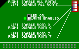

Lorsqu'ils ont créé le logiciel et le matériel du CPC, Amstrad et Locomotive Software ont prévu un moyen d'étendre le système à l'aide de ROMs supplémentaires. Ceci a permis l'intégration du contrôleur de disquettes d'une façon simple et élégante et facile à utiliser. Mais on peut aller beaucoup plus loin. Les ROMs peuvent enregistrer des commandes supplémentaires appelées RSX et permettent d'avoir de nombreux outils disponibles immédiatement au démarrage de la machine.
Au départ les ROMs étaient vraiment des ROMs. Certains périphériques (comme le Hackeur ou le DDI-1) en contenaient une seule. Mais une extension un peu populaire pour le CPC est d'ajouter une "ROM board", dont le seul rôle est d'ajouter plusieurs ROMs au CPC. Il existe plusieurs versions commerciales ou "do it yourself" de ce type d'extension, l'une des plus connue est la ROMBox d'Inicron.
L'utilisation des ROMs est peu pratique. Pour changer le programme contenu dans la mémoire, il est nécessaire de placer le composant dans un programmeur dédié. Cela est assez pénible surtout lors du développement d'une nouvelle ROM. Ce problème a été résolu par la RAMCard de Ram7. Cette carte remplace la ROM par une mémoire RAM dont le contenu est sauvegardé à l'aide d'une pile. Un interrupteur permet ainsi de reprogrammer les "ROMs" directement depuis le CPC.
Cette carte a été assez populaire pour les développeurs sur CPC et a permis l'apparition de nombreux logiciels en ROM. Cependant, la carte n'est pas parfaite: la batterie peut se décharger, et il n'est pas rare que le fait de débrancher, rebrancher ou déplacer la carte (pour visiter un meeting CPC par exemple) corrompe les données enregistrées.
La prochaine étape de cette évolution est d'utiliser de la mémoire "flash". Ce type de mémoire n'a pas besoin de batterie pour conserver ses données, et un système logiciel permet d'en protéger l'écriture. Bryce a réalisé ceci avec la carte MegaFlash. La FlashGordon est une amélioration de la carte MegaFlash avec les changements suivants:
Plusieurs versions de la carte ont été produites:
FlashGordon est pré-chargée avec ROMAN dans l'emplacement 15. Cet outil permet de programmer d'autres ROMs, de les activer ou désactiver, et de lister les RSX fournies par chacune. En cas de problème, il est possible de reprogrammer ROMAN depuis une disquette (non fournie).
Télécharger ROMAN 2.0 (dsk et manuel d'utilisation)Addressez vous à PulkoMandy. Le coût est de 25€, mais contactez-moi avant pour vous assurer qu'une carte est disponible dans un délai raisonable. La carte est fournie sans câble, assurez-vous de disposer d'un câble approprié ou bien d'une carte de type MotherX4 ou équivalente.
La FlashGordon se connecte sur le port d'extension du CPC. Il vous faut un câble avec soit un connecteur Centronics soit un connecteur bord de carte HE902 à une extrémité, et un connecteur HE10 de l'autre. Utilisez un câble aussi court que possible (pas plus de 20 centimètres) afin de limiter les interférences et perturbations.
La carte est placée avec le connecteur et les interrupteurs sur la face supérieure, et le connecteur HE10 en face du port d'extension du CPC. Dans cette position, le cable entre le CPC et la carte est tout droit. La broche 1 du connecteur d'extension se trouve en bas à gauche.
Si vous utilisez une carte Mother X4, la carte se connecte comme d'habitude, le côté avec le connecteur tourné vers vous.
Vous pouvez maintenant démarrer l'ordinateur. Le message d'accueil de ROMAN devrait s'afficher. Si ça ne marche pas, vérifiez tous les branchements. Il peut arriver que le connecteur d'extension du CPC soit sale ou corrodé, ou que quelque chose ne soit pas branché dans le bon sens. Il peut également arriver parfois que la carte soit défectueuse, dans ce cas elle peut être échangée.
La carte a 2 cavaliers et un bouton poussoir. Le bouton poussoir permet d'activer l'écriture, les cavaliers d'activer ou désactiver certaines ROMs.
L'écriture est autorisée lorsque la LED est allumée. Il est possible de laisser la carte dans ce mode en permanence, contrairement à la RAMCard, la protection logicielle est suffisante pour protéger les ROMs (sauf si un petit malin glissait un code écrivant volontairement sur la carte dans un programme que vous lancez).
Une limitation matérielle (héritée de la MegaFlash) fait que cette version de la carte accepte les écritures à la fois aux adresses C000-FFFF (comme attendu) mais aussi 8000-BFFF. Les logiciels de programmation prennent en compte cette contrainte donc cela ne devrait pas poser problème lors d'une utilisation normale. Ce problème est corrigé par les versions suivantes de la carte.
ll the time.La mémoire Flash a besoin d'un algorithme spécial pour sa programmation, les logiciels prévus pour la Ramcard ou la Megaflash originale ont besoin de quelques adaptations.
Le cavalier du haut contrôle la ROM 0 (normalement utilisée par le BASIC). Vous pouvez par exemple installer le Hackeur en ROM 0 et l'activer en utilisant ce cavalier.
Si le cavalier est placé en bas (vers le connecteur d'extension), la ROM BASIC du CPC sera utilisée. S'il est placé en haut, la ROM programmée sur la FlashGordon sera utilisée. Si le cavalier est complètement retiré, la FlashGordon est désactivée et aucune des ROMs n'est visible.
Le cavalier du bas contrôle la ROM7. Cet emplacement est réservé pour la ROM AMSDOS. Sur les CPC 6128 et 664 il n'est pas recomandé d'utiliser une ROM7 programmée dans la FlashGordon: cela pourrait provoquer un conflit électrique avec la ROM interne. Sur les 464 et Amstrad Plus il n'y a pas de problème, la ROM 7 internet peut être remplacée.
L'interrupteur d'écriture est un interrupteur à glissière situé près de la DEL au milieu de la carte.
Les cavaliers sont remplacés par des interrupteurs "DIP".
L'interruptuer numéro 1 n'est pas utilisé.
L'interrupteur numéro 2 permet d'activer (à droite) ou désactiver (à gauche) toute la carte.
Les interrupteurs 3 et 4 permettent de désactiver (à droite) ou d'activer (à gauche) les ROMs 0 et 7.
 {% include_relative footer.html %}